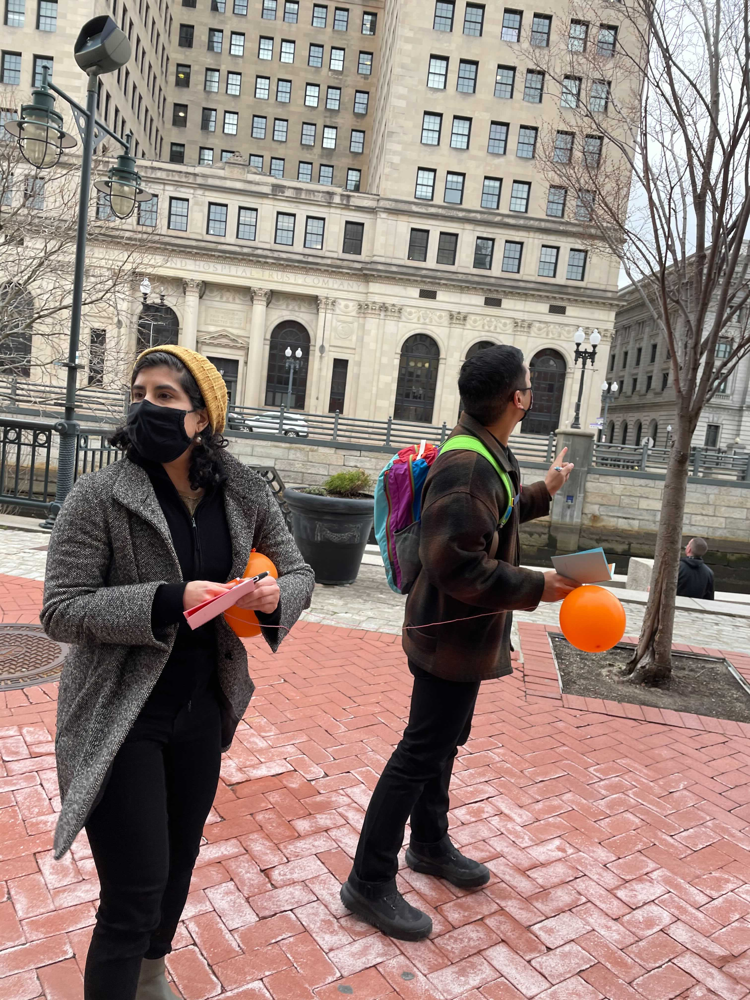
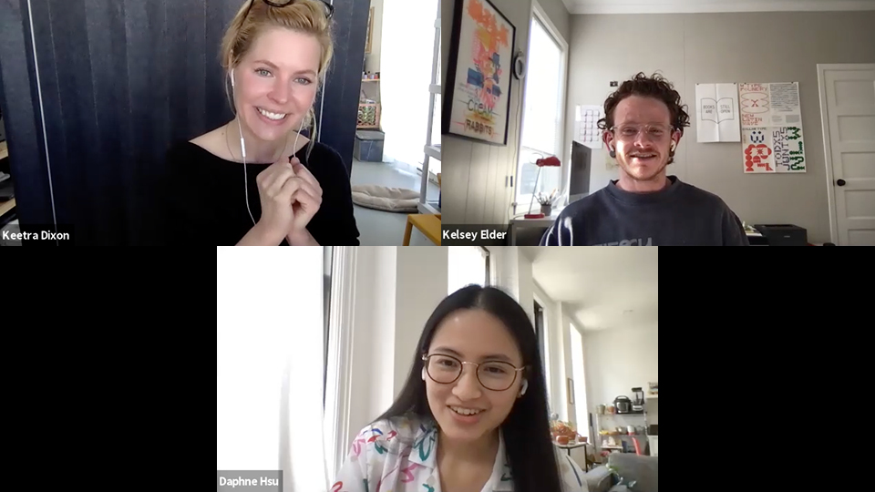
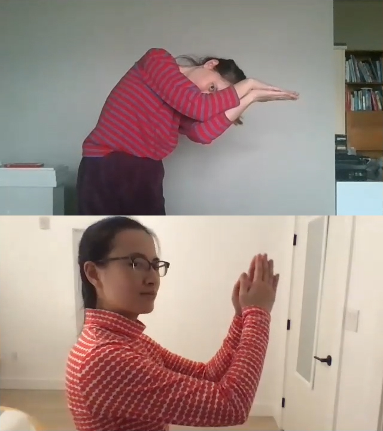

name: blue layout: true class: top, blue --- class: center # Refiguring Relations <div class="subtitle"> <h3>Daphne Hsu</h3> <h3>Thesis Presentation</h3> <h3>RISD GD MFA</h3> <h3>May 22, 2021</h3> <br> <p><span style="padding-right: 20px"><a href="https://drive.google.com/drive/folders/1DPJAUnElWv4PBhZOC_KeK4FupP15exys?usp=sharing" target="_blank">Zoom Backgrounds</a></span> <span style="padding-right: 20px"><a href="https://docs.google.com/document/d/1pMTd4W11TsGgEHguLmkmo848a21tbje6NSJNmjrY0ww/edit?usp=sharing" target="_blank">Guest Book</a></span> <a href="https://daphnehsu.com/refiguring-relations/img/RefiguringRelations_DaphneHsu.pdf" target="_blank">Thesis Book</a></p> </div> --- <div class="transcript">Hello, and thank you for coming to my presentation.</div> --- <div class="transcript">For the next 20-or-so minutes, I will share</div> --- <div class="transcript">my research interests and the work I made over the past two years.</div> --- <div class="transcript"> And then the remaining 20 minutes will be open for conversation.</div> --- <div class="transcript">Towards the end of my second fall semester in the program,</div> --- <left-column> <img class="imgpadding" src='img/intro_Alphabet.jpg' width="500px" alt="Video Chat Compositions: Alphabet"> <span class="caption"><i>Video Chat Composition 1: Alphabet</i></span> </left-column> <div class="transcript">I surveyed the work I had been doing,</div> --- <left-column> <img class="imgpadding" src='img/intro_Alphabet.jpg' width="500px" alt="Video Chat Compositions: Alphabet"> <span class="caption"><i>Video Chat Composition 1: Alphabet</i></span> </left-column> <right-column> <img class="imgpadding" src='img/intro_Stairwell.jpg' width="500px" alt="Stairwell Games"> <span class="caption"><i>Stairwell Games</i></span> </right-column> <div class="transcript">trying to find the throughlines in all the projects</div> --- <left-column> <span class="caption"><i>Providence River Scavenger Hunt</i></span> </left-column> <right-column> <img class="imgpadding" src='img/intro_Stairwell.jpg' width="500px" alt="Stairwell Games"> <span class="caption"><i>Stairwell Games</i></span> </right-column> <div class="transcript">as well as the right words to describe them.</div> --- <left-column> <span class="caption"><i>Providence River Scavenger Hunt</i></span> </left-column> <right-column> <img class="imgpadding" src='img/intro_Luck.jpg' width="500px" alt="As Luck Would Have It"> <span class="caption"><i>As Luck Would Have It</i> lottery ticket</span> </right-column> <div class="transcript">In a crit during the writing class I took with Anne West,</div> --- <left-column> <img class="imgpadding" src='img/intro_Furies.jpg' width="500px" alt="Furies"> <span class="caption"><i>Furies</i></span> </left-column> <right-column> <img class="imgpadding" src='img/intro_Luck.jpg' width="500px"alt="As Luck Would Have It"> <span class="caption"><i>As Luck Would Have It</i> lottery ticket</span> </right-column> <div class="transcript">a classmate, Amber, who was also my writing partner,</div> --- <left-column> <img class="imgpadding" src='img/intro_Furies.jpg' width="500px" alt="Furies"> <span class="caption"><i>Furies</i></span> </left-column> <right-column> <span class="caption"><i>GardenWorld</i></span> </right-column> <div class="transcript">used this phrase to describe my work:</div> --- class: middle, center <h2>“conditions for collaboration and <br> modes of interdependence”</h2> <div class="transcript">“[You set the] conditions for collaboration and modes of interdependence.” </div> --- class: middle, center <h2>“conditions for collaboration and <br> modes of interdependence”</h2> <div class="transcript">This last word, “interdependence” stuck with me.</div> --- class: middle, center -- <div class="transcript">Interdependence happens when two or more people or things are dependent on each other.</div> --- class: middle, center <div class="transcript">You could say that the writing partnership that Amber and I had in class was interdependent.</div> --- class: middle, center <div class="transcript">We relied on each other for thoughtful feedback.</div> --- <div class="transcript">In nature, there are different types of interdependent relationships,</div> --- <div class="transcript">biologically known as symbiosis.</div> --- class: middle, center <img src='img/intro_parasitic.png' height="500px" alt="Parasitic Relationship"> <div class="transcript">A parasitic relationship is one in which one organism, the parasite,</div> --- class: middle, center <img src='img/intro_parasitic.png' height="500px" alt="Parasitic Relationship"> <div class="transcript">lives off another organism, the host,</div> --- class: middle, center <img src='img/intro_parasitic.png' height="500px" alt="Parasitic Relationship"> <div class="transcript">in a way beneficial to the parasite but harming the host.</div> --- class: middle, center <img src='img/intro_commensalist.png' height="500px" alt="Commensalist Relationship"> <div class="transcript">A commensalistic relationship is more neutral.</div> --- class: middle, center <img src='img/intro_commensalist.png' height="500px" alt="Commensalist Relationship"> <div class="transcript">One organism, usually smaller, benefits from the habits</div> --- class: middle, center <img src='img/intro_commensalist.png' height="500px" alt="Commensalist Relationship"> <div class="transcript">of a larger host without harming them.</div> --- <figure> </figure> <div class="transcript">An example are barnacles,</div> --- <figure> </figure> <div class="transcript">which attach to whales to passively filter food</div> --- <figure> </figure> <figure> </figure> <div class="transcript">while the whale swims through the ocean.</div> --- <figure> </figure> <figure> </figure> <div class="transcript">Sometimes, whales use the barnacles as protective armor,</div> --- <figure> </figure> <figure> </figure> <figure> </figure> <div class="transcript">which makes the relationship mutualistic.</div> --- <figure> </figure> <figure> </figure> <figure> </figure> <div class="transcript">A mutualistic relationship is one in which both parties benefit from each other.</div> --- class: middle, center <div class="transcript">You can map human relationships onto these animalistic ones,</div> --- class: middle, center <div class="transcript">although the dynamics are slightly more complicated.</div> --- class: middle, center <div class="transcript">There are power differentials, ego, personality, history,</div> --- class: middle, center <div class="transcript">and a bunch of other factors involved.</div> --- class: middle, center <div class="transcript">But this is what I am interested in:</div> --- class: middle, center <div class="transcript">how people affect one another, how people rely on each other.</div> --- class: middle, center <h2>Graphic design?</h2> <div class="transcript">So how does all this translate into graduate graphic design work?</div> --- class: middle, center <h2>Graphic design?</h2> <div class="transcript">What prompted my writing partner to describe my work as organizing conditions for interdependence?</div> --- class: middle center <figure><video src='img/intro_bookmock_WIP.mp4' type="video/mp4" width="800px" autoplay loop disablepictureinpicture muted></video></figure> <div class="transcript">I categorize my thinking and projects in my <a href="https://daphnehsu.com/refiguring-relations/img/RefiguringRelations_DaphneHsu.pdf" target="_blank">thesis book</a> into two themes, which I will also use today:</div> --- <div class="transcript">first, interdependence, as I defined earlier, involves the actions</div> --- <div class="transcript">and behaviors of multiple parties of people.</div> --- class: middle, center <h2>Graphic design</h2> <h2>↓</h2> <h2>Collaboration</h2> <div class="transcript">In my graduate work, I explored different modes of collaboration,</div> --- class: middle, center <h2>Graphic design</h2> <h2>↓</h2> <h2>Collaboration</h2> <div class="transcript">particularly between me as the designer and my audience of participants,</div> --- class: middle, center <h2>Graphic design</h2> <h2>↓</h2> <h2>Collaboration</h2> <div class="transcript">and among participants themselves.</div> --- class: middle, center <h2>Graphic design</h2> <h2>↓</h2> <h2>Collaboration</h2> <h2>Access</h2> <div class="transcript">Second, interdependence involves access:</div> --- class: middle, center <h2>Graphic design</h2> <h2>↓</h2> <h2>Collaboration</h2> <h2>Access</h2> <div class="transcript">how do people access resources, information, and each other?</div> --- class: middle, center <h2>Graphic design</h2> <h2>↓</h2> <h2>Collaboration</h2> <h2>Access</h2> <div class="transcript">The other set of work I will talk about explores questions</div> --- class: middle, center <h2>Graphic design</h2> <h2>↓</h2> <h2>Collaboration</h2> <h2>Access</h2> <div class="transcript">of access through distribution and circulation.</div> --- name: red layout: true class: top, red --- class: center # Collaboration -- <div class="transcript" style="font-style:normal">In my various working experiences before grad school,</div> --- class: center # Collaboration <div class="transcript">I was always preoccupied with how people worked together:</div> --- class: center # Collaboration <div class="transcript">the social and power dynamics between people</div> --- class: center # Collaboration <div class="transcript">as well as how people do or don’t feel agency and value while working on a project.</div> --- <figure> <figcaption>Making decorations for a Valentine's Day party, February 2020</figcaption></figure> <div class="transcript">For me and probably for many of you, the design process is social and collaborative,</div> --- <figure> <figcaption>Making decorations for a Valentine's Day party, February 2020</figcaption></figure> <div class="transcript">such as this ad hoc gathering to make decorations in the studio last winter.</div> --- <figure> <figcaption>Making decorations for a Valentine's Day party, February 2020</figcaption></figure> <div class="transcript">I enjoy being able to learn how other people work,</div> --- <figure> <figcaption>Making decorations for a Valentine's Day party, February 2020</figcaption></figure> <div class="transcript">such as how each person approached making paper hearts.</div> --- <figure> <figcaption>Making decorations for a Valentine's Day party, February 2020</figcaption></figure> <div class="transcript">I also enjoy bouncing ideas off of other people</div> --- <figure> <figcaption>Making decorations for a Valentine's Day party, February 2020</figcaption></figure> <div class="transcript">and working out problems together,</div> --- <figure> <figcaption>Making decorations for a Valentine's Day party, February 2020</figcaption></figure> <div class="transcript">although collaboration is not always easy.</div> --- <div class="transcript">In considering the people-ness of graphic design,</div> --- <div class="transcript">design work also directly engages audiences,</div> --- <figure><video src="img/collaboration_book.mp4" type="video/mp4" width="400px" controls disablepictureinpicture muted></video> <figcaption><i>Yin Yang Sea</i> (in progress)</figcaption></figure> <div class="transcript">whether through the intimacy of a book</div> --- <figure><video src="img/collaboration_book.mp4" type="video/mp4" width="400px" controls disablepictureinpicture muted></video> <figcaption><i>Yin Yang Sea</i> (in progress)</figcaption></figure> <figure><video src="img/collaboration_website.mp4" type="video/mp4" width="400px" style="margin-top:-50px" controls disablepictureinpicture muted></video><figcaption><i>Meticulous Drawing Tools</i></figcaption></figure> <div class="transcript">or the interactivity of a tool or digital platform,</div> --- <figure><video src="img/collaboration_book.mp4" type="video/mp4" width="400px" controls disablepictureinpicture muted></video> <figcaption><i>Yin Yang Sea</i> (in progress)</figcaption></figure> <figure><video src="img/collaboration_website.mp4" type="video/mp4" width="400px" style="margin-top:-50px" controls disablepictureinpicture muted></video><figcaption><i>Meticulous Drawing Tools</i></figcaption></figure> <figure></figure> <figure><video src="img/collaboration_experience.mp4" type="video/mp4" width="200px" controls disablepictureinpicture muted></video><figcaption><i>Stairwell Games</i></figcaption></figure> <div class="transcript">or the immersiveness of an experience.</div> --- class: center <h2><i>Video Chat Compositions</i></h2> <h3 style="font-style: normal">Collaborating from scripts</h3> -- <div class="transcript">This first project I will share explores the dynamics</div> --- class: center <h2><i>Video Chat Compositions</i></h2> <h3 style="font-style: normal">Collaborating from scripts</h3> <div class="transcript">of working with people from scripts to accomplish a task.</div> --- class: center <h2><i>Video Chat Compositions</i></h2> <h3 style="font-style: normal">Collaborating from scripts</h3> <div class="transcript">In <i>Video Chat Compositions</i>, I asked people to make</div> --- class: center <h2><i>Video Chat Compositions</i></h2> <h3 style="font-style: normal">Collaborating from scripts</h3> <div class="transcript">the letters of the alphabet using their bodies</div> --- class: center <h2><i>Video Chat Compositions</i></h2> <h3 style="font-style: normal">Collaborating from scripts</h3> <div class="transcript">across video thumbnails on Zoom.</div> --- class: center <h2><i>Video Chat Compositions</i></h2> <h3 style="font-style: normal">Collaborating from scripts</h3> <div class="transcript">This was a way of trying to explore</div> --- class: center <h2><i>Video Chat Compositions</i></h2> <h3 style="font-style: normal">Collaborating from scripts</h3> <div class="transcript">intimacy and connection over video chat.</div> --- class: center middle <div> <video src="img/collaboration_AH_MH_sped up.mp4" type="video/mp4" width="1000px" controls disablepictureinpicture muted></video> </div> -- <div class="transcript">In this first exercise, the three of us took turns giving each other instructions.</div> --- class: center middle <div> <video src="img/collaboration_AH_MH_sped up.mp4" type="video/mp4" width="1000px" controls disablepictureinpicture muted></video> </div> <div class="transcript">At the time, Zoom dictated where everyone shows up in the gallery view.</div> --- class: center middle <div> <video src="img/collaboration_AH_MH_sped up.mp4" type="video/mp4" width="1000px" controls disablepictureinpicture muted></video> </div> <div class="transcript">This meant that not everyone’s screen looked the same,</div> --- class: center middle <div> <video src="img/collaboration_AH_MH_sped up.mp4" type="video/mp4" width="1000px" controls disablepictureinpicture muted></video> </div> <div class="transcript">so we each took a third of the alphabet to direct.</div> --- class: center middle <div> <video src="img/collaboration_AH_MH_sped up.mp4" type="video/mp4" width="1000px" controls disablepictureinpicture muted></video> </div> <div class="transcript">This meant that we had to trust the instincts of whoever was directing,</div> --- class: center middle <div> <video src="img/collaboration_AH_MH_sped up.mp4" type="video/mp4" width="1000px" controls disablepictureinpicture muted></video> </div> <div class="transcript">because we may not actually see a letter being formed on our own screen.</div> --- class: center middle <div> <video src="img/collaboration_AH_MH_sped up.mp4" type="video/mp4" width="1000px" controls disablepictureinpicture muted></video> </div> <div class="transcript">We verbally directed each other to move around our thumbnails,</div> --- class: center middle <div> <video src="img/collaboration_AH_MH_sped up.mp4" type="video/mp4" width="1000px" controls disablepictureinpicture muted></video> </div> <div class="transcript">to scoot closer to the edge of a window, to raise an arm.</div> --- class: center middle <div> <video src="img/collaboration_AH_MH_sped up.mp4" type="video/mp4" width="1000px" autoplay controls disablepictureinpicture muted></video> </div> <div class="transcript">The video changes when someone else takes over directing.</div> --- class: center middle <video src="img/collaboration_CH_DH.mp4" type="video/mp4" width="820px" controls disablepictureinpicture muted></video> -- <div class="transcript">In this second exercise, another collaborator and I</div> --- class: center middle <video src="img/collaboration_CH_DH.mp4" type="video/mp4" width="820px" controls disablepictureinpicture muted></video> <div class="transcript">agreed on a set of letters ahead of time, then spelled out words.</div> --- class: center middle <video src="img/collaboration_CH_DH.mp4" type="video/mp4" width="820px" controls disablepictureinpicture muted></video> <div class="transcript">This time, we were mostly quiet, watching each other</div> --- class: center middle <video src="img/collaboration_CH_DH.mp4" type="video/mp4" width="820px" autoplay controls disablepictureinpicture muted></video> <div class="transcript">make shapes on screen, then reacting to those movements.</div> --- class: center middle <img src="img/collaboration_VidChat_Alpha.png" width="820px" alt="Screenshot of instructions"> <div class="transcript">From this, I began writing scripts as a way to frame the interaction.</div> --- class: center middle <img src="img/collaboration_VidChat_Alpha.png" width="820px" alt="Screenshot of instructions"> <div class="transcript">This way, I could also hand them off to be interpreted by anyone who wants to enact them.</div> --- class: center middle <img src="img/collaboration_VidChat_Hug.png" width="820px" alt="Screenshot of instructions"> <div class="transcript">There are two other sets of instructions in this series.</div> --- class: center middle <video src="img/collaboration_group_hug.mp4" width="900px" autoplay controls disablepictureinpicture muted></video> <div class="transcript">There’s one to hug each other on video chat.</div> --- class: center middle <div class="transcript">The third set instructs people to hold hands on screen</div> --- class: center middle <video src="img/collaboration_connection.mp4" width="900px" autoplay controls disablepictureinpicture muted></video> <div class="transcript">by connecting their arms.</div> --- <figure><img src="img/collaboration_conditionaldesign.jpeg" width="420px" alt="Conditional Design Workbook"> <figcaption><i>Conditional Design Workbook</i></figcaption></figure> <div class="transcript">This practice has precedents in conditional design,</div> --- <figure><img src="img/collaboration_conditionaldesign.jpeg" width="420px" alt="Conditional Design Workbook"> <figcaption><i>Conditional Design Workbook</i></figcaption></figure> <div class="transcript">which is a design approach in which rules dictate a set of logic</div> --- <figure><img src="img/collaboration_conditionaldesign.jpeg" width="420px" alt="Conditional Design Workbook"> <figcaption><i>Conditional Design Workbook</i></figcaption></figure> <div class="transcript">to simulate collaboration among participants.</div> --- <figure><img src="img/collaboration_conditionaldesign.jpeg" width="420px" alt="Conditional Design Workbook"> <figcaption><i>Conditional Design Workbook</i></figcaption></figure> <figure><img src="img/collaboration_Fluxus.jpeg" width="480px" style="margin-top:-60px" alt="MiekoShiomi < music for two players II > 1963"> <figcaption>Mieko Shiomi, <i>< music for two players II >, 1963</i></figcaption></figure> <div class="transcript">You also see scripting in Fluxus scores, which act as music compositions</div> --- <figure><img src="img/collaboration_conditionaldesign.jpeg" width="420px" alt="Conditional Design Workbook"> <figcaption><i>Conditional Design Workbook</i></figcaption></figure> <figure><img src="img/collaboration_Fluxus.jpeg" width="480px" style="margin-top:-60px" alt="MiekoShiomi < music for two players II > 1963"> <figcaption>Mieko Shiomi, <i>< music for two players II >, 1963</i></figcaption></figure> <div class="transcript">for the artist and audiences to perform.</div> --- <figure><img src="img/collaboration_conditionaldesign.jpeg" width="420px" alt="Conditional Design Workbook"> <figcaption><i>Conditional Design Workbook</i></figcaption></figure> <figure><img src="img/collaboration_Fluxus.jpeg" width="480px" style="margin-top:-60px" alt="MiekoShiomi < music for two players II > 1963"> <figcaption>Mieko Shiomi, <i>< music for two players II >, 1963</i></figcaption></figure> <figure><img src="img/collaboration_script.jpg" width="420px" style="margin-top:-80px" alt="page from the script for Lady Bird"> <figcaption><i>Lady Bird</i></figcaption></figure> <div class="transcript">Scripts, of course, are also used to direct behavior and collaboration in acting</div> --- <figure><img src="img/collaboration_conditionaldesign.jpeg" width="420px" alt="Conditional Design Workbook"> <figcaption><i>Conditional Design Workbook</i></figcaption></figure> <figure><img src="img/collaboration_Fluxus.jpeg" width="480px" style="margin-top:-60px" alt="MiekoShiomi < music for two players II > 1963"> <figcaption>Mieko Shiomi, <i>< music for two players II >, 1963</i></figcaption></figure> <figure><img src="img/collaboration_script.jpg" width="420px" style="margin-top:-80px" alt="page from the script for Lady Bird"> <figcaption><i>Lady Bird</i></figcaption></figure> <figure></figure> <figure><img src="img/collaboration_basketballplay.jpeg" width="320px" style="margin-top:-30px" alt="Phil Jackson's diagram of a Michael Jordan play"> <figcaption>diagram of a play by Michael Jordan</figcaption></figure> <div class="transcript">and in sports.</div> --- class: center <h2><i>Propaganda Game</i></h2> <h3 style="font-style: normal">Responding to shared conditions</h3> -- <div class="transcript">Another project that used a script of sorts was Propaganda Game, a poster-making workshop.</div> --- class: center -- <div class="transcript">I asked participants to quickly brainstorm a position</div> --- class: center <div class="transcript">meaningful to them about our shared graduate studio space,</div> --- class: center <div class="transcript">then make a propaganda poster to convince others about their position.</div> --- class: center <div class="transcript">My classmates and faculty ran around the studio, hanging their posters up.</div> --- class: center <img src='img/collaboration_propaganda_3.jpg' width="260px" alt="How often do you, we, I, leave?"> <img src='img/collaboration_propaganda_4.jpg' width="260px" alt="Bright Lights are 4 Your Doctor's Office (Not the Studio)"><br> <img src='img/collaboration_propaganda_5.jpg' width="260px" alt="Affordable Housing 4 All Students"> <img src='img/collaboration_propaganda_6.jpg' width="260px" alt="The Plotter is Evil/Satan"> <img src='img/collaboration_propaganda_1.jpg' width="260px" alt="Stay with the Mess / Let's Collaborate More"> <div class="transcript">Then I asked them to react to each others’ posters,</div> --- class: center <img src='img/collaboration_propaganda_3.jpg' width="260px" alt="How often do you, we, I, leave?"> <img src='img/collaboration_propaganda_4.jpg' width="260px" alt="Bright Lights are 4 Your Doctor's Office (Not the Studio)"><br> <img src='img/collaboration_propaganda_5.jpg' width="260px" alt="Affordable Housing 4 All Students"> <img src='img/collaboration_propaganda_6.jpg' width="260px" alt="The Plotter is Evil/Satan"> <img src='img/collaboration_propaganda_1.jpg' width="260px" alt="Stay with the Mess / Let's Collaborate More"> <div class="transcript">adding comments or reinforcing messages they agreed with,</div> --- class: center <img src='img/collaboration_propaganda_3.jpg' width="260px" alt="How often do you, we, I, leave?"> <img src='img/collaboration_propaganda_4.jpg' width="260px" alt="Bright Lights are 4 Your Doctor's Office (Not the Studio)"><br> <img src='img/collaboration_propaganda_5.jpg' width="260px" alt="Affordable Housing 4 All Students"> <img src='img/collaboration_propaganda_6.jpg' width="260px" alt="The Plotter is Evil/Satan"> <img src='img/collaboration_propaganda_1.jpg' width="260px" alt="Stay with the Mess / Let's Collaborate More"> <div class="transcript">the way that people might react to propaganda memes online.</div> --- <left-column> <img src='img/collaboration_propaganda_1.jpg' width="500px" alt="Stay with the Mess / Let's Collaborate More"> </left-column> <div class="transcript">One poster said, “Let’s collaborate more.”</div> --- <left-column> <img src='img/collaboration_propaganda_1.jpg' width="500px" alt="Stay with the Mess / Let's Collaborate More"> </left-column> <div class="transcript">People responded, “Interdisciplinarily,” “How will we compete?” and “!”</div> --- <left-column> <img src='img/collaboration_propaganda_1.jpg' width="500px" alt="Stay with the Mess / Let's Collaborate More"> </left-column> <right-column> <img src='img/collaboration_propaganda_3.jpg' width="500px" alt="How often do you, we, I, leave?"> </right-column> <div class="transcript">Another poster said, “Use less paper.”</div> --- <left-column> <img src='img/collaboration_propaganda_1.jpg' width="500px" alt="Stay with the Mess / Let's Collaborate More"> </left-column> <right-column> <img src='img/collaboration_propaganda_3.jpg' width="500px" alt="How often do you, we, I, leave?"> </right-column> <div class="transcript">People responded, “ironic…” “YES,” and “change major!”</div> --- class: center <img src='img/collaboration_propaganda_3.jpg' width="260px" alt="How often do you, we, I, leave?"> <img src='img/collaboration_propaganda_4.jpg' width="260px" alt="Bright Lights are 4 Your Doctor's Office (Not the Studio)"><br> <img src='img/collaboration_propaganda_5.jpg' width="260px" alt="Affordable Housing 4 All Students"> <img src='img/collaboration_propaganda_6.jpg' width="260px" alt="The Plotter is Evil/Satan"> <img src='img/collaboration_propaganda_1.jpg' width="260px" alt="Stay with the Mess / Let's Collaborate More"> <div class="transcript">I got feedback that the posters read more like postings or public service announcements,</div> --- class: center <img src='img/collaboration_propaganda_3.jpg' width="260px" alt="How often do you, we, I, leave?"> <img src='img/collaboration_propaganda_4.jpg' width="260px" alt="Bright Lights are 4 Your Doctor's Office (Not the Studio)"><br> <img src='img/collaboration_propaganda_5.jpg' width="260px" alt="Affordable Housing 4 All Students"> <img src='img/collaboration_propaganda_6.jpg' width="260px" alt="The Plotter is Evil/Satan"> <img src='img/collaboration_propaganda_1.jpg' width="260px" alt="Stay with the Mess / Let's Collaborate More"> <div class="transcript">which is probably the result of my framing, but it was still</div> --- class: center <img src='img/collaboration_propaganda_3.jpg' width="260px" alt="How often do you, we, I, leave?"> <img src='img/collaboration_propaganda_4.jpg' width="260px" alt="Bright Lights are 4 Your Doctor's Office (Not the Studio)"><br> <img src='img/collaboration_propaganda_5.jpg' width="260px" alt="Affordable Housing 4 All Students"> <img src='img/collaboration_propaganda_6.jpg' width="260px" alt="The Plotter is Evil/Satan"> <img src='img/collaboration_propaganda_1.jpg' width="260px" alt="Stay with the Mess / Let's Collaborate More"> <div class="transcript">an interesting way to quickly start conversations about opinions</div> --- class: center <img src='img/collaboration_propaganda_3.jpg' width="260px" alt="How often do you, we, I, leave?"> <img src='img/collaboration_propaganda_4.jpg' width="260px" alt="Bright Lights are 4 Your Doctor's Office (Not the Studio)"><br> <img src='img/collaboration_propaganda_5.jpg' width="260px" alt="Affordable Housing 4 All Students"> <img src='img/collaboration_propaganda_6.jpg' width="260px" alt="The Plotter is Evil/Satan"> <img src='img/collaboration_propaganda_1.jpg' width="260px" alt="Stay with the Mess / Let's Collaborate More"> <div class="transcript">that people had about the space and the institution.</div> --- class: center <h2><i>Providence River Walk Scavenger Hunt</i></h2> <h3 style="font-style: normal">Exercising attention, navigating each other</h3> -- <div class="transcript">I did another project this past spring that’s a distant cousin to that project,</div> --- class: center <h2><i>Providence River Walk Scavenger Hunt</i></h2> <h3 style="font-style: normal">Exercising attention, navigating each other</h3> <div class="transcript">still dealing with people’s observation about a common space,</div> --- class: center <h2><i>Providence River Walk Scavenger Hunt</i></h2> <h3 style="font-style: normal">Exercising attention, navigating each other</h3> <div class="transcript">but with more focus on attention and sharing.</div> --- class: center <img src='img/collaboration_PVDRiverWalk_2.jpg' width="790px" alt="Providence River Walk Scavenger Hunt participants"> <div class="transcript">To make a game out of taking a walk with a partner,</div> --- class: center <img src='img/collaboration_PVDRiverWalk_2.jpg' width="790px" alt="Providence River Walk Scavenger Hunt participants"> <div class="transcript">I made these little booklets, bound together by six feet of string,</div> --- class: center <img src='img/collaboration_PVDRiverWalk_2.jpg' width="790px" alt="Providence River Walk Scavenger Hunt participants"> <div class="transcript">for two people to go on a scavenger hunt by the Providence River.</div> --- class: center <img src='img/collaboration_PVDRiverWalk_5' width="820px" alt="Providence River Walk Scavenger Hunt booklets"> <div class="transcript">The prompts in the book go back and forth,</div> --- class: center <img src='img/collaboration_PVDRiverWalk_5' width="820px" alt="Providence River Walk Scavenger Hunt booklets"> <div class="transcript">so one partner will notice something while the partner writes down the response,</div> --- class: center <img src='img/collaboration_PVDRiverWalk_5' width="820px" alt="Providence River Walk Scavenger Hunt booklets"> <div class="transcript">then switch roles with the next turn.</div> --- class: center <img src='img/collaboration_PVDRiverWalk_5' width="820px" alt="Providence River Walk Scavenger Hunt booklets"> --- class: center <img src='img/collaboration_PVDRiverWalk_5' width="820px" alt="Providence River Walk Scavenger Hunt booklets"> <div class="transcript">In the booklets, all the pages that are orange are instructions,</div> --- class: center <img src='img/collaboration_PVDRiverWalk_5' width="820px" alt="Providence River Walk Scavenger Hunt booklets"> <div class="transcript">while their partner’s book has room for writing.</div> --- <left-column> </left-column> <div class="transcript">All the while, they’re navigating the six feet of socially distant space between them.</div> --- <left-column> </left-column> <div class="transcript">There was a question of how people would walk with each other:</div> --- <left-column> </left-column> <div class="transcript">would one lead while the other followed?</div> --- <left-column> </left-column> <right-column> <img src='img/collaboration_PVDRiverWalk_7.jpg' width="500px" alt="Providence River Walk Scavenger Hunt participants"> </right-column> <div class="transcript">How would they deal with other people on the sidewalk or obstructions?</div> --- <left-column> </left-column> <right-column> <img src='img/collaboration_PVDRiverWalk_7.jpg' width="500px" alt="Providence River Walk Scavenger Hunt participants"> </right-column> <div class="transcript">In the end, the participants ended up walking next to each other.</div> --- <figure></figure> <div class="transcript">To take this back to collaboration,</div> --- <figure></figure> <figure><img src='img/collaboration_connection_2.png' width="410px" style="margin-top:-20px" alt="Video Chat Compositions: Connection"> </figure> <div class="transcript">all these projects were done with a willing audience of RISD students and friends</div> --- <figure></figure> <figure><img src='img/collaboration_connection_2.png' width="410px" style="margin-top:-20px" alt="Video Chat Compositions: Connection"> </figure> <figure><img src='img/collaboration_propaganda_1.jpg' width="280px" style="margin-right:100px" alt="Stay with the Mess / Let's Collaborate More"></figure> <div class="transcript">who have existing relationships with each other and me.</div> --- <figure></figure> <figure><img src='img/collaboration_connection_2.png' width="410px" style="margin-top:-20px" alt="Video Chat Compositions: Connection"> </figure> <figure><img src='img/collaboration_propaganda_1.jpg' width="280px" style="margin-right:100px" alt="Stay with the Mess / Let's Collaborate More"></figure> <figure><img src='img/collaboration_group_hug_2.jpg' width="300px" style="margin-top:-60px; margin-left:160px" alt="Video Chat Compositions: Hug" ></figure> <div class="transcript">However, I felt like we were put in new situations</div> --- <figure></figure> <figure><img src='img/collaboration_connection_2.png' width="410px" style="margin-top:-20px" alt="Video Chat Compositions: Connection"> </figure> <figure><img src='img/collaboration_propaganda_1.jpg' width="280px" style="margin-right:100px" alt="Stay with the Mess / Let's Collaborate More"></figure> <figure><img src='img/collaboration_group_hug_2.jpg' width="300px" style="margin-top:-60px; margin-left:160px" alt="Video Chat Compositions: Hug" ></figure> <figure></figure> <div class="transcript">in having to work together, to have to give instructions</div> --- <figure></figure> <figure><img src='img/collaboration_connection_2.png' width="410px" style="margin-top:-20px" alt="Video Chat Compositions: Connection"> </figure> <figure><img src='img/collaboration_propaganda_1.jpg' width="280px" style="margin-right:100px" alt="Stay with the Mess / Let's Collaborate More"></figure> <figure><img src='img/collaboration_group_hug_2.jpg' width="300px" style="margin-top:-60px; margin-left:160px" alt="Video Chat Compositions: Hug" ></figure> <figure></figure> <figure></figure> <div class="transcript">and respond to each other in ways that we hadn’t before.</div> --- <div class="transcript">For my thesis book, I interviewed a few practitioners who</div> --- <div class="transcript">have worked on bigger experiences with more audiences.</div> --- class: center <h2><i>Keetra Dean Dixon & Kelsey Elder</i></h2>  <div class="transcript">I talked to Keetra Dean Dixon and Kelsey Elder together</div> --- class: center <h2><i>Keetra Dean Dixon & Kelsey Elder</i></h2> <div class="transcript">as past and present Experiential Design professors here at RISD.</div> --- class: center <h2><i>Keetra Dean Dixon & Kelsey Elder</i></h2> <div class="transcript">In making work that directly engages audiences,</div> --- class: center middle <h3>Think about audience from the beginning</h3> <div class="transcript">they both talked about coming up with archetypes of people who might participate in their work.</div> --- class: center middle <h3>Think about audience from the beginning</h3> <h3>Develop archetypes to think through audience journeys</h3> <div class="transcript">How would their wary father move through an experience?</div> --- class: center middle <h3>Think about audience from the beginning</h3> <h3>Develop archetypes to think through audience journeys</h3> <div class="transcript">How would an 18-year-old freshman encounter a work?</div> --- class: center middle <h3>Think about audience from the beginning</h3> <h3>Develop archetypes to think through audience journeys</h3> <h3>Know your audience through interviews & research</h3> <div class="transcript">They also talked about getting to know their audiences as much as possible,</div> --- class: center middle <h3>Think about audience from the beginning</h3> <h3>Develop archetypes to think through audience journeys</h3> <h3>Know your audience through interviews & research</h3> <div class="transcript">either through interviews or observations through research.</div> --- class: center middle <h3>Think about audience from the beginning</h3> <h3>Develop archetypes to think through audience journeys</h3> <h3>Know your audience through interviews & research</h3> <div class="transcript">The icebreaker questions we answer at the beginning of the semester,</div> --- class: center middle <h3>Think about audience from the beginning</h3> <h3>Develop archetypes to think through audience journeys</h3> <h3>Know your audience through interviews & research</h3> <div class="transcript">for example, are one way of gauging students’ energies and perspectives.</div> --- class: center <h2><i>Mary Welcome</i></h2> <img src='img/collaboration_interview_2.jpg' width="820px" style="margin-top: 30px" alt="Zoom interview with Mary Welcome"> <div class="transcript">I also talked to Mary Welcome, a cultural worker whose practice</div> --- class: center <h2><i>Mary Welcome</i></h2> <img src='img/collaboration_interview_2.jpg' width="820px" style="margin-top: 30px" alt="Zoom interview with Mary Welcome"> <div class="transcript">is based in rural America and being embedded in different communities.</div> --- class: center middle <h3>Be a good neighbor by practicing reciprocity</h3> <div class="transcript">We talked about reciprocity, how not to be extractive when inviting participation.</div> --- class: center middle <h3>Be a good neighbor by practicing reciprocity</h3> <h3>Value work with compensation</h3> <div class="transcript">She underscored the importance of compensation and valuing the work and effort people put in.</div> --- class: center middle <h3>Be a good neighbor by practicing reciprocity</h3> <h3>Value work with compensation</h3> <div class="transcript">When working with municipal governments, for example,</div> --- class: center middle <h3>Be a good neighbor by practicing reciprocity</h3> <h3>Value work with compensation</h3> <h3>Compensation circulates back through community</h3> <div class="transcript">she’ll encourage that volunteers be compensated—if not monetarily—</div> --- class: center middle <h3>Be a good neighbor by practicing reciprocity</h3> <h3>Value work with compensation</h3> <h3>Compensation circulates back through community</h3> <div class="transcript">then with time or access to local services.</div> --- class: center middle <h3>Be a good neighbor by practicing reciprocity</h3> <h3>Value work with compensation</h3> <h3>Compensation circulates back through community</h3> <div class="transcript">In working with her collective Homeboat, everyone tracks their hours,</div> --- class: center middle <h3>Be a good neighbor by practicing reciprocity</h3> <h3>Value work with compensation</h3> <h3>Compensation circulates back through community</h3> <div class="transcript">including domestic labor, so that everyone gets paid for their work on a project.</div> --- <div class="transcript">These ideas of value and reciprocity come up again in this next section…</div> --- name: green layout: true class: top, green --- class: center # Access -- <div class="transcript" style="font-style:normal">At the top of the presentation, I talked about different types</div> --- class: center # Access <div class="transcript">of interdependent relationships and touched upon the ways</div> --- class: center # Access <div class="transcript">that people affect and depend on each other.</div> --- class: middle <left-column> <span class="caption">from Romik Bose Mitra's <a href="https://effectiveimmediately.cargo.site/" target="_blank"><i>Effective Immediately</i></a></span> </left-column> <div class="transcript">For me, these interpersonal interactions came under a spotlight at the onset of the pandemic,</div> --- class: middle <left-column> <span class="caption">from Romik Bose Mitra's <a href="https://effectiveimmediately.cargo.site/" target="_blank"><i>Effective Immediately</i></a></span> </left-column> <div class="transcript">when we—as people living around each other—reconfigured</div> --- class: middle <left-column> <span class="caption">from Romik Bose Mitra's <a href="https://effectiveimmediately.cargo.site/" target="_blank"><i>Effective Immediately</i></a></span> </left-column> <right-column> <span class="caption">Line outside Elmhurst Hospital in Queens (<a href="https://www.nytimes.com/2020/12/03/nyregion/coronavirus-new-york.html">source</a>)</span> </right-column> <div class="transcript">our own behavior to protect each other, whether that meant staying home,</div> --- class: middle <left-column> <span class="caption">from Romik Bose Mitra's <a href="https://effectiveimmediately.cargo.site/" target="_blank"><i>Effective Immediately</i></a></span> </left-column> <right-column> <span class="caption">Line outside Elmhurst Hospital in Queens (<a href="https://www.nytimes.com/2020/12/03/nyregion/coronavirus-new-york.html">source</a>)</span> </right-column> <div class="transcript">social distancing, wearing masks, washing our hands.</div> --- class: middle <left-column> <img class="imgpadding" src='img/access_pandemic_4.jpg' width="500px" alt="Social distance circles in a park"> <span class="caption">Social distancing circles in a park (<a href="https://www.kpbs.org/news/2020/jul/24/without-a-vaccine-researchers-say-herd-immunity/">source</a>)</span> </left-column> <right-column> <span class="caption">Line outside Elmhurst Hospital in Queens (<a href="https://www.nytimes.com/2020/12/03/nyregion/coronavirus-new-york.html">source</a>)</span> </right-column> <div class="transcript">Beyond personal hygiene, people also checked in</div> --- class: middle <left-column> <img class="imgpadding" src='img/access_pandemic_4.jpg' width="500px" alt="Social distance circles in a park"> <span class="caption">Social distancing circles in a park (<a href="https://www.kpbs.org/news/2020/jul/24/without-a-vaccine-researchers-say-herd-immunity/">source</a>)</span> </left-column> <right-column> <span class="caption">Line outside Elmhurst Hospital in Queens (<a href="https://www.nytimes.com/2020/12/03/nyregion/coronavirus-new-york.html">source</a>)</span> </right-column> <div class="transcript">with friends and family, pooled resources,</div> --- class: middle <left-column> <img class="imgpadding" src='img/access_pandemic_4.jpg' width="500px" alt="Social distance circles in a park"> <span class="caption">Social distancing circles in a park (<a href="https://www.kpbs.org/news/2020/jul/24/without-a-vaccine-researchers-say-herd-immunity/">source</a>)</span> </left-column> <right-column> <img class="imgpadding" src='img/access_pandemic_1.jpg' width="500px" alt="Sign requiring masks for entry"> <span class="caption">from Romik Bose Mitra's <a href="https://effectiveimmediately.cargo.site/" target="_blank"><i>Effective Immediately</i></a></span> </right-column> <div class="transcript">and moved money and materials toward people who needed them,</div> --- class: middle <left-column> <img class="imgpadding" src='img/access_pandemic_4.jpg' width="500px" alt="Social distance circles in a park"> <span class="caption">Social distancing circles in a park (<a href="https://www.kpbs.org/news/2020/jul/24/without-a-vaccine-researchers-say-herd-immunity/">source</a>)</span> </left-column> <right-column> <img class="imgpadding" src='img/access_pandemic_1.jpg' width="500px" alt="Sign requiring masks for entry"> <span class="caption">from Romik Bose Mitra's <a href="https://effectiveimmediately.cargo.site/" target="_blank"><i>Effective Immediately</i></a></span> </right-column> <div class="transcript">as seen through the growth of mutual aid projects and neighborhood groups.</div> --- class: center <figure> <figcaption>from a <a href="https://mutualaiddisasterrelief.org/wp-content/uploads/2020/04/NO-LOGOS-Mutual-Aid-101_-Toolkit.pdf">Mutual Aid 101 Toolkit</a> from March 2020</figcaption></figure> <div class="transcript">In the latter cases, people stepped up for each other</div> --- class: center <figure> <figcaption>from a <a href="https://mutualaiddisasterrelief.org/wp-content/uploads/2020/04/NO-LOGOS-Mutual-Aid-101_-Toolkit.pdf">Mutual Aid 101 Toolkit</a> from March 2020</figcaption></figure> <div class="transcript">in ways that institutions were failing them.</div> --- class: center <figure> <figcaption>from a <a href="https://mutualaiddisasterrelief.org/wp-content/uploads/2020/04/NO-LOGOS-Mutual-Aid-101_-Toolkit.pdf">Mutual Aid 101 Toolkit</a> from March 2020</figcaption></figure> <div class="transcript">Last spring, a group of grad students organized as</div> --- class: center <figure><img src='img/access_mutualaid.png' width="860px" alt="Grad Resource/Care Network spreadsheet"> <figcaption>RISD Grad Resource Care/Network Spreadsheet started by the COVID-19 Grad Task Force</figcaption></figure> <div class="transcript">the COVID-19 Grad Task Force and sent out this shared Google Sheet</div> --- class: center <figure><img src='img/access_mutualaid.png' width="860px" alt="Grad Resource/Care Network spreadsheet"> <figcaption>RISD Grad Resource Care/Network Spreadsheet started by the COVID-19 Grad Task Force</figcaption></figure> <div class="transcript">for people to support each other with their resources and time</div> --- class: center <figure><img src='img/access_mutualaid.png' width="860px" alt="Grad Resource/Care Network spreadsheet"> <figcaption>RISD Grad Resource Care/Network Spreadsheet started by the COVID-19 Grad Task Force</figcaption></figure> <div class="transcript">under the changing circumstances of the pandemic.</div> --- class: center <figure><img src='img/access_mutualaid.png' width="860px" alt="Grad Resource/Care Network spreadsheet"> <figcaption>RISD Grad Resource Care/Network Spreadsheet started by the COVID-19 Grad Task Force</figcaption></figure> <div class="transcript">Students were in precarious housing situations and losing access to tools and facilities,</div> --- class: center <figure><img src='img/access_mutualaid.png' width="860px" alt="Grad Resource/Care Network spreadsheet"> <figcaption>RISD Grad Resource Care/Network Spreadsheet started by the COVID-19 Grad Task Force</figcaption></figure> <div class="transcript">all without any sort of tuition reimbursement.</div> --- class: center <figure><img src='img/access_mutualaid.png' width="860px" alt="Grad Resource/Care Network spreadsheet"> <figcaption>RISD Grad Resource Care/Network Spreadsheet started by the COVID-19 Grad Task Force</figcaption></figure> <div class="transcript">This spreadsheet, for me, represented the beginnings of</div> --- class: center <figure><img src='img/access_mutualaid.png' width="860px" alt="Grad Resource/Care Network spreadsheet"> <figcaption>RISD Grad Resource Care/Network Spreadsheet started by the COVID-19 Grad Task Force</figcaption></figure> <div class="transcript">community-building outside of the institution,</div> --- class: center <figure><img src='img/access_mutualaid.png' width="860px" alt="Grad Resource/Care Network spreadsheet"> <figcaption>RISD Grad Resource Care/Network Spreadsheet started by the COVID-19 Grad Task Force</figcaption></figure> <div class="transcript">where students shared resources and looked after one another.<div> --- class: center <left-column> </div> <div class="transcript">This fraught relationship with a top-down institution and</div> --- class: center <left-column> </div> <right-column> <img src='img/access_bottom-up.png' height="500px" style="margin-left:-80px" alt="Bottom-up orientation"> </div> <div class="transcript">these grassroots relationships among students,</div> --- class: center <left-column> </div> <right-column> <img src='img/access_bottom-up.png' height="500px" style="margin-left:-80px" alt="Bottom-up orientation"> </div> <div class="transcript">different types of interdependent relationships, are also what I’m interested in.</div> --- class: center <left-column> </div> <right-column> <img src='img/access_bottom-up.png' height="500px" style="margin-left:-80px" alt="Bottom-up orientation"> </div> <div class="transcript">What systems or structures do people live within</div> --- class: center <left-column> </div> <right-column> <img src='img/access_bottom-up.png' height="500px" style="margin-left:-80px" alt="Bottom-up orientation"> </div> <div class="transcript">that affect the types of interactions we have with each other,</div> --- class: center <left-column> </div> <right-column> <img src='img/access_bottom-up.png' height="500px" style="margin-left:-80px" alt="Bottom-up orientation"> </div> <div class="transcript">whether one of mutual exchange or of competition?</div> --- class: center <left-column> </div> <right-column> <img src='img/access_bottom-up.png' height="500px" style="margin-left:-80px" alt="Bottom-up orientation"> </div> <div class="transcript">What kinds of information and resources are made accessible, or not, and how?</div> --- class: middle, center <h2>Access</h2> <div class="transcript">From a graphic design perspective, I think about access</div> --- class: middle, center <h2>Access</h2> <h2>↓</h2> <h2>Content</h2> <div class="transcript">in terms of content and</div> --- class: middle, center <h2>Access</h2> <h2>↓</h2> <h2>Content</h2> <h2>Intent</h2> <div class="transcript">intent. Who does work speak to,</div> --- class: middle, center <h2>Access</h2> <h2>↓</h2> <h2>Content</h2> <h2>Intent</h2> <h2>Form</h2> <div class="transcript">and how is that reflected through form, language, and representation?</div> --- class: middle, center <h2>Access</h2> <h2>↓</h2> <h2>Content</h2> <h2>Intent</h2> <h2>Form</h2> <div class="transcript">Is it exclusionary? Or specific and inclusive? Esoteric? Or concrete?</div> --- class: middle, center <h2>Access</h2> <h2>↓</h2> <h2>Content</h2> <h2>Intent</h2> <h2>Form</h2> <h2>Distribution</h2> <div class="transcript">Access can also be considered in terms of distribution</div> --- class: middle, center <h2>Access</h2> <h2>↓</h2> <h2>Content</h2> <h2>Intent</h2> <h2>Form</h2> <h2>Distribution</h2> <h2>Circulation</h2> <div class="transcript">and circulation.</div> --- class: middle, center <h2>Access</h2> <h2>↓</h2> <h2>Content</h2> <h2>Intent</h2> <h2>Form</h2> <h2>Distribution</h2> <h2>Circulation</h2> <div class="transcript">What choices can be made to reach certain audiences,</div> --- class: middle, center <h2>Access</h2> <h2>↓</h2> <h2>Content</h2> <h2>Intent</h2> <h2>Form</h2> <h2>Distribution</h2> <h2>Circulation</h2> <div class="transcript">and then how will that work circulate?</div> --- class: center <h2><i>Mj Balvanera</i></h2> <div class="transcript">I also interviewed Mj Balvanera, who helped found Co-Conspirator Press in Los Angeles.</div> --- class: center <h2><i>Mj Balvanera</i></h2> <div class="transcript">She looks at the entire system of publishing</div> --- class: center <h2><i>Mj Balvanera</i></h2> <div class="transcript">with Co-Co Press through the lens of redistribution.</div> --- class: center middle <h3>Publishing as a system of redistribution</h3> <div class="transcript">The authors that the Press works with are specifically from</div> --- class: center middle <h3>Publishing as a system of redistribution</h3> <div class="transcript">underrepresented communities in the publishing world.</div> --- class: center middle <h3>Publishing as a system of redistribution</h3> <h3>Money & press resources → authors</h3> <div class="transcript">In the act of making a book with an author, there’s the idea</div> --- class: center middle <h3>Publishing as a system of redistribution</h3> <h3>Money & press resources → authors</h3> <div class="transcript">of distributing resources to the author: sales from a book,</div> --- class: center middle <h3>Publishing as a system of redistribution</h3> <h3>Money & press resources → authors</h3> <div class="transcript">the Press’ capabilities in terms of printing and distributing.</div> --- class: center middle <h3>Publishing as a system of redistribution</h3> <h3>Money & press resources → authors</h3> <h3>Ideas & content from authors → public</h3> <div class="transcript">She also frames the publishing of content as redistribution.</div> --- class: center middle <h3>Publishing as a system of redistribution</h3> <h3>Money & press resources → authors</h3> <h3>Ideas & content from authors → public</h3> <div class="transcript">A lot of the books are resource guides and workbooks,</div> --- class: center middle <h3>Publishing as a system of redistribution</h3> <h3>Money & press resources → authors</h3> <h3>Ideas & content from authors → public</h3> <div class="transcript">so the idea is that this knowledge and content is being made publicly available.</div> --- class: middle, center <img src='img/access_interdependence.png' height="500px" alt="Network of Interdependence"> <div class="transcript">I appreciated hearing her talk about publishing holistically</div> --- class: middle, center <img src='img/access_interdependence.png' height="500px" alt="Network of Interdependence"> <div class="transcript">and from a systems level. Every decision made in the process</div> --- class: middle, center <img src='img/access_interdependence.png' height="500px" alt="Network of Interdependence"> <div class="transcript">is intentional and affects another stage,</div> --- class: middle, center <img src='img/access_interdependence.png' height="500px" alt="Network of Interdependence"> <div class="transcript">all the way through the readers receiving the books.</div> --- <div class="transcript">In school, I started out last fall making projects that</div> --- <div class="transcript">investigated systems and structures of power to see</div> --- <div class="transcript">how access to information and resources is regulated.</div> --- class: center <h2><i>How to Get a Diamond</i></h2> <h3 style="font-style: normal">Controlled access, constructed value</h3> <div class="subtitle" style="height:15px"><p><a href="http://daphsu.github.io/Diamond-Quest" target="_blank">http://daphsu.github.io/Diamond-Quest</i></a></p></div> -- <div class="transcript">In <i>How to Get a Diamond</i>, I attempt to understand and unpack</div> --- class: center <h2><i>How to Get a Diamond</i></h2> <h3 style="font-style: normal">Controlled access, constructed value</h3> <div class="subtitle" style="height:15px"><p><a href="http://daphsu.github.io/Diamond-Quest" target="_blank">http://daphsu.github.io/Diamond-Quest</i></a></p></div> <div class="transcript">the workings of an industry, how they inscribe value to a commodity by controlling access,</div> --- class: center <h2><i>How to Get a Diamond</i></h2> <h3 style="font-style: normal">Controlled access, constructed value</h3> <div class="subtitle" style="height:15px"><p><a href="http://daphsu.github.io/Diamond-Quest" target="_blank">http://daphsu.github.io/Diamond-Quest</i></a></p></div> <div class="transcript">and how this constructed value is then expressed by consumers.</div> --- class: center <figure><img src='img/1_howtogetadiamond.png' width="900px" alt="How to Get a Diamond"></figure> <div class="transcript">I did this by looking at the diamond ring,</div> --- class: center <figure><img src='img/3_howtogetadiamond.png' width="900px" alt="How to Get a Diamond"></figure> <div class="transcript">and how its cultural narrative as a symbol of love is perpetuated by the diamond industry.</div> --- class: center <figure> </figure> <div class="transcript">To do this, I took on a persona, Dee Diamonds, in trying to get a diamond ring for free.</div> --- class: center <figure> </figure> <div class="transcript">Dee is snoopy, a bit ruthless, and really wants a diamond on her own terms,</div> --- class: center <figure><img src='img/5_howtogetadiamond.png' width="900px" alt="How to Get a Diamond"> </figure> <div class="transcript">which is, again, for free, and without strings attached.</div> --- class: center <figure> </figure> <div class="transcript">Her attempts to get a free diamond are documented through this website.</div> --- class: center <figure> </figure> <div class="transcript">The website is set up like a tunnel; you click further and further in to find out more.</div> --- class: center <figure> </figure> <div class="transcript">The different types of requests are listed out here, </div> --- class: center <figure><img src='img/9_howtogetadiamond.png' width="900px" alt="How to Get a Diamond"> </figure> <div class="transcript">which start with a Craigslist ad</div> --- class: center <figure><img src='img/10_howtogetadiamond.png' width="900px" alt="How to Get a Diamond"> </figure> --- class: center <figure> </figure> --- class: center <figure> </figure> --- class: center <figure> </figure> <div class="transcript">and progresses to writing to different diamond suppliers</div> --- class: center <figure><img src='img/14_howtogetadiamond.png' width="900px" alt="How to Get a Diamond"> </figure> <div class="transcript">and the Queen of England for a diamond for graduate research.</div> --- class: center <figure><img src='img/15_howtogetadiamond.png' width="900px" alt="How to Get a Diamond"> </figure> <div class="transcript">She seeks out diamond mines to see what the possibilities are there;</div> --- class: center <figure> </figure> <div class="transcript">plays a massive multi-player online role playing game to crowdsource;</div> --- class: center <figure><img src='img/17_howtogetadiamond.png' width="900px" alt="How to Get a Diamond"> </figure> <div class="transcript">tries divorce forums and keeps track of recently divorced celebrities.</div> --- class: center <figure><img src='img/18_howtogetadiamond.png' width="900px" alt="How to Get a Diamond"> </figure> <div class="transcript">She starts researching more questionable methods, like planning a heist.</div> --- class: center <figure><img src='img/18_howtogetadiamond.png' width="900px" alt="How to Get a Diamond"> </figure> <div class="transcript">The search ended with the semester, and Dee still doesn’t have a diamond.</div> --- class: center <figure><img src='img/18_howtogetadiamond.png' width="900px" alt="How to Get a Diamond"> </figure> <div class="transcript">But I did end with the sense that there are actually</div> --- class: center <figure><img src='img/18_howtogetadiamond.png' width="900px" alt="How to Get a Diamond"> </figure> <div class="transcript">a lot of diamonds out in the world and saw how the sense of value</div> --- class: center <figure><img src='img/18_howtogetadiamond.png' width="900px" alt="How to Get a Diamond"> </figure> <div class="transcript">around diamonds is perpetuated, in part, by cultural lore and allure.</div> --- <div class="transcript">With this idea of limited access in mind, I want to go back to publishing.</div> --- <div class="transcript">What does it mean to control access to content, and even limit it?</div> --- class: center <h2><i>Peer, Peer, Peer, and Peer</i></h2> <h3 style="font-style: normal">Conditional access</h3> -- <div class="transcript">This is what happens with <i>Peer, Peer, Peer, and Peer</i>,</div> --- class: center <h2><i>Peer, Peer, Peer, and Peer</i></h2> <h3 style="font-style: normal">Conditional access</h3> <div class="transcript">which my classmates Kit, Will, Lai, and I made.</div> --- class: center <figure><video src="img/access_peer2peer_1.mov" type="video/mp4" width="900px" controls loop disablepictureinpicture muted></video></figure> <div class="transcript">Peer, Peer, Peer, and Peer is a meeting space and publishing platform</div> --- class: center <figure><video src="img/access_peer2peer_1.mov" type="video/mp4" width="900px" controls loop disablepictureinpicture muted></video></figure> <div class="transcript">that exists on a peer-to-peer network. This means that</div> --- class: center <figure><video src="img/access_peer2peer_1.mov" type="video/mp4" width="900px" controls loop disablepictureinpicture muted></video></figure> <div class="transcript">we can only be on the site if someone is hosting it from their computer.</div> --- class: center <figure><video src="img/access_peer2peer_1.mov" type="video/mp4" width="900px" controls loop disablepictureinpicture muted></video></figure> <div class="transcript">And on top of that, we can only get into the site if all of us are online together.</div> --- class: center <figure><video src="img/access_peer2peer_1.mov" type="video/mp4" width="900px" autoplay controls loop disablepictureinpicture muted></video></figure> <div class="transcript">This video shows the process of accessing the site and going through the code of values.</div> --- class: center <figure><video src="img/access_peer2peer_1.mov" type="video/mp4" width="900px" controls loop disablepictureinpicture muted></video></figure> <div class="transcript">Our concerns about privacy and control on the internet informed</div> --- class: center <figure><video src="img/access_peer2peer_1.mov" type="video/mp4" width="900px" controls loop disablepictureinpicture muted></video></figure> <div class="transcript">our decision to be on the peer-to-peer web, where we own all the files on the site.</div> --- class: center <figure><video src="img/access_peer2peer_1.mov" type="video/mp4" width="900px" controls loop disablepictureinpicture muted></video></figure> <div class="transcript">They’re not being filtered through third party hosting networks.</div> --- class: center <figure><video src="img/access_peer2peer_1.mov" type="video/mp4" width="900px" controls loop disablepictureinpicture muted></video></figure> <div class="transcript">The conditional access is also based on the decision to make</div> --- class: center <figure><video src="img/access_peer2peer_1.mov" type="video/mp4" width="900px" controls loop disablepictureinpicture muted></video></figure> <div class="transcript">synchronicity and presence key parts of the experience.</div> --- class: center <figure><video src="img/access_peer2peer_1.mov" type="video/mp4" width="900px" controls loop disablepictureinpicture muted></video></figure> <div class="transcript">When we’re on the site, we’re there collaborating together.</div> --- class: center <figure><video src="img/access_peer2peer_2.mov" type="video/mp4" width="900px" controls loop disablepictureinpicture muted></video></figure> <div class="transcript">On top of privacy, the limiting of access also has to do with consent.</div> --- class: center <figure><video src="img/access_peer2peer_2.mov" type="video/mp4" width="900px" controls loop disablepictureinpicture muted></video></figure> <div class="transcript">We consent to be on the site together, to share our projects </div> --- class: center <figure><video src="img/access_peer2peer_2.mov" type="video/mp4" width="900px" controls loop disablepictureinpicture muted></video></figure> <div class="transcript">with each other as a known audience, and to be intentional</div> --- class: center <figure><video src="img/access_peer2peer_2.mov" type="video/mp4" width="900px" controls loop disablepictureinpicture muted></video></figure> <div class="transcript">about bringing more peers in.</div> --- class: center <figure><video src="img/access_peer2peer_2.mov" type="video/mp4" width="900px" controls loop disablepictureinpicture muted></video></figure> <div class="transcript">Publishing on the site also plays with ideas of authorship.</div> --- class: center <figure><video src="img/access_peer2peer_2.mov" type="video/mp4" width="900px" controls loop disablepictureinpicture muted></video></figure> <div class="transcript">On this peer-to-peer network, websites can be forked;</div> --- class: center <figure><video src="img/access_peer2peer_2.mov" type="video/mp4" width="900px" controls loop disablepictureinpicture muted></video></figure> <div class="transcript">the code can be copied to someone else’s computer and then played with.</div> --- class: center <figure><video src="img/access_peer2peer_2.mov" type="video/mp4" width="900px" autoplay controls loop disablepictureinpicture muted></video></figure> <div class="transcript">So publishing on this site becomes a ritual of offering rather than authoring.</div> --- class: center <h2><i>A Book That Grows</i></h2> <h3 style="font-style: normal">Access through circulation</h3> -- <div class="transcript">The last project I will talk about is <i>A Book That Grows</i>.</div> --- class: center <h2><i>A Book That Grows</i></h2> <h3 style="font-style: normal">Access through circulation</h3> <div class="transcript">This is a series of readers that are meant to be shared.</div> --- class: center <h2><i>A Book That Grows</i></h2> <h3 style="font-style: normal">Access through circulation</h3> <div class="transcript">The readers look different but follow the same set of rules:</div> --- class: center <h2><i>A Book That Grows</i></h2> <h3 style="font-style: normal">Access through circulation</h3> <div class="transcript">they had to play with the form of the book and the reading experience,</div> --- class: center <h2><i>A Book That Grows</i></h2> <h3 style="font-style: normal">Access through circulation</h3> <div class="transcript">to be printed on 8.5 x 11" paper and made with available materials,</div> --- class: center <h2><i>A Book That Grows</i></h2> <h3 style="font-style: normal">Access through circulation</h3> <div class="transcript">and to be easily mailable. All the readers also use excerpts from</div> --- class: center <h2><i>A Book That Grows</i></h2> <h3 style="font-style: normal">Access through circulation</h3> <div class="transcript">existing texts reassembled together to play off each other in new ways.</div> --- class: center middle <figure><video src="img/access_book_garden.mp4" type="video/mp4" width="900px" controls disablepictureinpicture muted></video></figure> <div class="transcript">This first book, the <i>Garden Reader</i>, plays with the idea</div> --- class: center middle <figure><video src="img/access_book_garden.mp4" type="video/mp4" width="900px" controls disablepictureinpicture muted></video></figure> <div class="transcript">of ephemerality and transformation. Texts are hidden within the folds</div> --- class: center middle <figure><video src="img/access_book_garden.mp4" type="video/mp4" width="900px" controls disablepictureinpicture muted></video></figure> <div class="transcript">and speak about gardening in terms of reciprocity and decay.</div> --- class: center middle <figure><video src="img/access_book_garden.mp4" type="video/mp4" width="900px" controls disablepictureinpicture muted></video></figure> <div class="transcript">You are encouraged to tear open the pages to read the writing,</div> --- class: center middle <figure><video src="img/access_book_garden.mp4" type="video/mp4" width="900px" controls disablepictureinpicture muted></video></figure> <div class="transcript">and to tear bits off to plant the pages. My thinking with this book</div> --- class: center middle <figure><video src="img/access_book_garden.mp4" type="video/mp4" width="900px" controls disablepictureinpicture muted></video></figure> <div class="transcript">is that it’s just long enough that no one person can plant all these pages,</div> --- class: center middle <figure><video src="img/access_book_garden.mp4" type="video/mp4" width="900px" autoplay controls disablepictureinpicture muted></video></figure> <div class="transcript">so the book must be shared to not go to waste.</div> --- class: center middle <figure><video src="img/access_community_reader.mp4" type="video/mp4" width="900px" controls disablepictureinpicture muted></video> </figure> <div class="transcript">This second book, the <i>Community Reader</i> is a workbook</div> --- class: center middle <figure><video src="img/access_community_reader.mp4" type="video/mp4" width="900px" controls disablepictureinpicture muted></video> </figure> <div class="transcript">meant to be shared between people who feel safe with each other,</div> --- class: center middle <figure><video src="img/access_community_reader.mp4" type="video/mp4" width="900px" controls disablepictureinpicture muted></video> </figure> <div class="transcript">like a traveling book club on paper. It collects together texts about</div> --- class: center middle <figure><video src="img/access_community_reader.mp4" type="video/mp4" width="900px" controls disablepictureinpicture muted></video> </figure> <div class="transcript">community-building and forms of neighborhood safety that reject policing.</div> --- class: center middle <figure><video src="img/access_community_reader.mp4" type="video/mp4" width="900px" controls disablepictureinpicture muted></video> </figure> <div class="transcript">The pages fold out like an accordion and include lots of margin space</div> --- class: center middle <figure><video src="img/access_community_reader.mp4" type="video/mp4" width="900px" controls disablepictureinpicture muted></video> </figure> <div class="transcript">and some workbook pages for writing and reflecting. It affords space</div> --- class: center middle <figure><video src="img/access_community_reader.mp4" type="video/mp4" width="900px" controls disablepictureinpicture muted></video> </figure> <div class="transcript">for six readers to pass the book between each other.</div> --- class: center middle <figure><video src="img/access_community_reader.mp4" type="video/mp4" width="900px" controls disablepictureinpicture muted></video> </figure> <div class="transcript">The pages are the size of printer paper, so readers can</div> --- class: center middle <figure><video src="img/access_community_reader.mp4" type="video/mp4" width="900px" autoplay controls disablepictureinpicture muted></video> </figure> <div class="transcript">tape on additional readings if they want.</div> --- <div class="transcript">To circle back to the idea of interdependence, I’m interested,</div> --- <figure><video src='img/collaboration_group_hug.mp4' width="300px" controls disablepictureinpicture muted ></figure> <div class="transcript">through graphic design work—using scripts, distribution models, and interactive experiences—</div> --- <figure><video src='img/collaboration_group_hug.mp4' width="300px" controls disablepictureinpicture muted ></figure> <figure><img src='img/collaboration_propaganda_1.jpg' width="210px" style="margin-right: 350px" alt="Stay with the Mess / Let's Collaborate More"></figure> <div class="transcript">in visualizing the ways people interact with one another,</div> --- <figure><video src='img/collaboration_group_hug.mp4' width="300px" controls disablepictureinpicture muted ></figure> <figure><img src='img/collaboration_propaganda_1.jpg' width="210px" style="margin-right: 350px" alt="Stay with the Mess / Let's Collaborate More"></figure> <figure></figure> <div class="transcript">particularly in constructive and positive ways. In my thesis book,</div> --- <figure><video src='img/collaboration_group_hug.mp4' width="300px" controls disablepictureinpicture muted ></figure> <figure><img src='img/collaboration_propaganda_1.jpg' width="210px" style="margin-right: 350px" alt="Stay with the Mess / Let's Collaborate More"></figure> <figure></figure> <figure></figure> <div class="transcript">I write about this as “alliance building, however temporary, slow, or small,”</div> --- <figure><video src='img/collaboration_group_hug.mp4' width="300px" controls disablepictureinpicture muted ></figure> <figure><img src='img/collaboration_propaganda_1.jpg' width="210px" style="margin-right: 350px" alt="Stay with the Mess / Let's Collaborate More"></figure> <figure></figure> <figure></figure> <figure><img src='img/18_howtogetadiamond.png' width="340px" style="margin-top:40px; margin-left: -150px;" alt="Video Chat Compositions: Connection"></figure> <div class="transcript">as a way to encourage connections and systems of interdependence between people.</div> --- <figure><video src='img/collaboration_group_hug.mp4' width="300px" controls disablepictureinpicture muted ></figure> <figure><img src='img/collaboration_propaganda_1.jpg' width="210px" style="margin-right: 350px" alt="Stay with the Mess / Let's Collaborate More"></figure> <figure></figure> <figure></figure> <figure><img src='img/18_howtogetadiamond.png' width="340px" style="margin-top:40px; margin-left: -150px;" alt="Video Chat Compositions: Connection"></figure> <figure><img src='img/access_peer2peer_3.png' width="320px" style="margin-left:600px" alt="Stay with the Mess / Let's Collaborate More"></figure> <div class="transcript">I think about this in terms of collaboration—how do people work with each other?—</div> --- <figure><video src='img/collaboration_group_hug.mp4' width="300px" controls disablepictureinpicture muted ></figure> <figure><img src='img/collaboration_propaganda_1.jpg' width="210px" style="margin-right: 350px" alt="Stay with the Mess / Let's Collaborate More"></figure> <figure></figure> <figure></figure> <figure><img src='img/18_howtogetadiamond.png' width="340px" style="margin-top:40px; margin-left: -150px;" alt="Video Chat Compositions: Connection"></figure> <figure><img src='img/access_peer2peer_3.png' width="320px" style="margin-left:600px" alt="Stay with the Mess / Let's Collaborate More"></figure> <figure><video src='img/access_book_garden_2.mp4' width="300px" style="margin-top:140px; margin-left:720px" controls disablepictureinpicture muted></figure> <div class="transcript">and through access—how do people create access for each other?</div> --- <figure><video src='img/collaboration_group_hug.mp4' width="300px" controls disablepictureinpicture muted ></figure> <figure><img src='img/collaboration_propaganda_1.jpg' width="210px" style="margin-right: 350px" alt="Stay with the Mess / Let's Collaborate More"></figure> <figure></figure> <figure></figure> <figure><img src='img/18_howtogetadiamond.png' width="340px" style="margin-top:40px; margin-left: -150px;" alt="Video Chat Compositions: Connection"></figure> <figure><img src='img/access_peer2peer_3.png' width="320px" style="margin-left:600px" alt="Stay with the Mess / Let's Collaborate More"></figure> <figure><video src='img/access_book_garden_2.mp4' width="300px" style="margin-top:140px; margin-left:720px" controls disablepictureinpicture muted></figure> <figure></figure> <div class="transcript">I will end with some questions that this work about collaboration and access has led me toward,</div> --- <figure><video src='img/collaboration_group_hug.mp4' width="300px" autoplay controls disablepictureinpicture muted ></figure> <figure><img src='img/collaboration_propaganda_1.jpg' width="210px" style="margin-right: 350px" alt="Stay with the Mess / Let's Collaborate More"></figure> <figure></figure> <figure></figure> <figure><img src='img/18_howtogetadiamond.png' width="340px" style="margin-top:40px; margin-left: -150px;" alt="Video Chat Compositions: Connection"></figure> <figure><img src='img/access_peer2peer_3.png' width="320px" style="margin-left:600px" alt="Stay with the Mess / Let's Collaborate More"></figure> <figure><video src='img/access_book_garden_2.mp4' width="300px" style="margin-top:140px; margin-left:720px" autoplay controls disablepictureinpicture muted></figure> <figure></figure> <div class="transcript">some questions for the future, and maybe some questions that may spark conversation:</div> --- name: yellow layout: true class: top, yellow --- class: center middle <h3>In working collaboratively, how can multiple viewpoints, unexpected outcomes, and disagreement be engaged?</h3><br> -- <h3>In working around access, how can different communities’ accessibility needs be prioritized?</h3><br> -- <h3>How can longer and deeper engagement with collaborators and participants be fostered?</h3> --- class: center top #Thank you